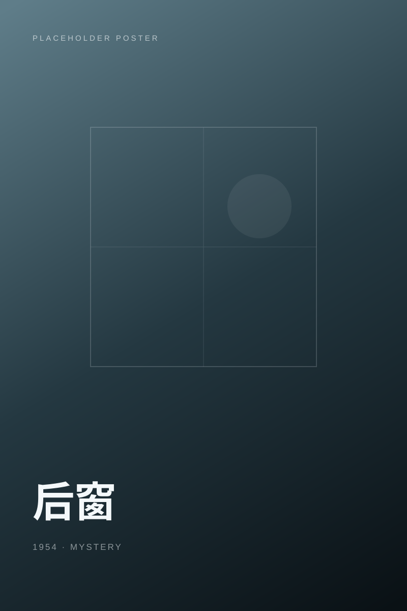

Poster placeholder / 0101 / Film shelf
片库精选
先从几部最近想看的电影开始。海报与片名暂为占位内容，完整片单在片库页面。
02 / About the shelf
在光影中
慢慢筛选
影
哎哟蔚 / Aiyowei
个人电影收藏 · 持续更新
Daily line / 每日台词
正在加载今天的台词。
每天从台词库中选择一句，让电影在片单之外，也留下一点声音。
台词依据本地日期切换，同一天打开页面时，总能看到同一句话。
Collection mood
安静剧情 / 科幻 / 公路
老电影 / 夏夜 / 城市故事
剧情
科幻
动画
悬疑
爱情
公路
黑白
重看
01
先被故事打动
不追热门，只留下真正让自己产生好奇的电影。
02
允许再次观看
有些电影第一次看故事，第二次才开始看见情绪。
03
保留当时感受
简单标记想看与看过，让片单成为一段时间里的注脚。